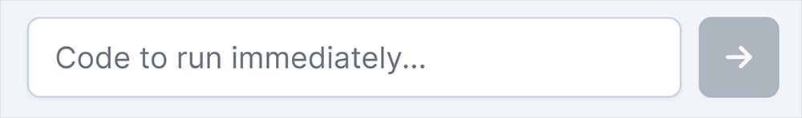
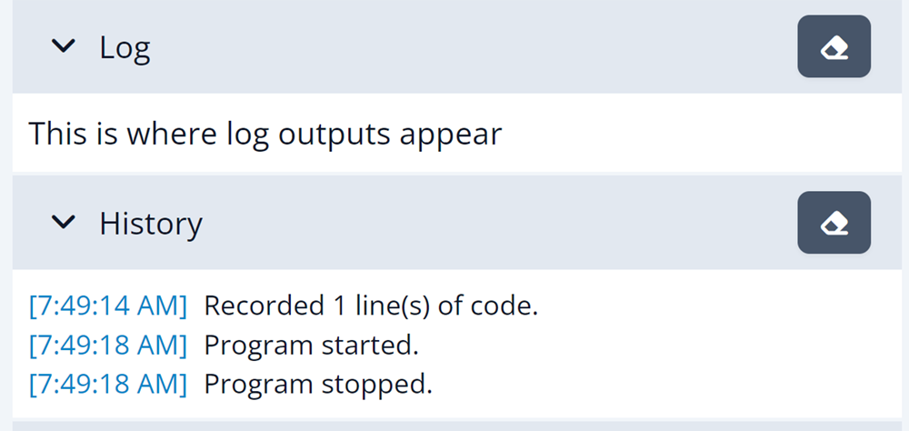
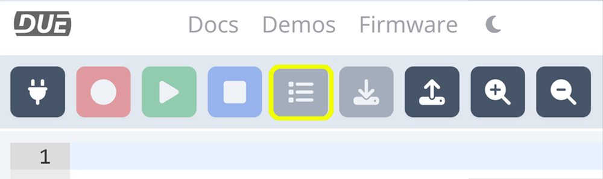
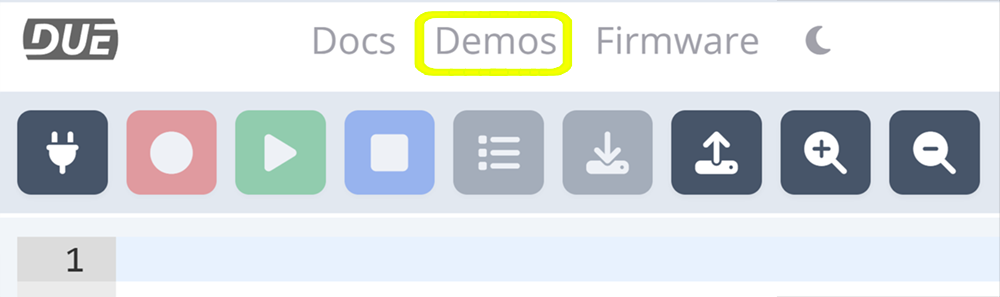
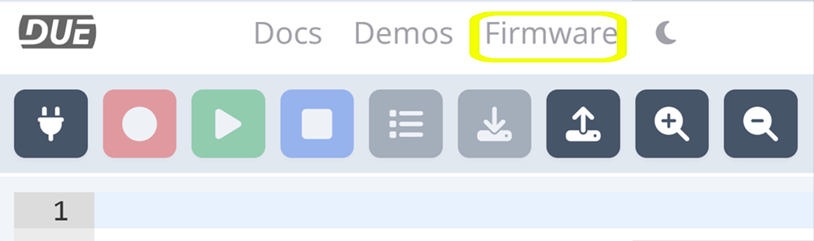
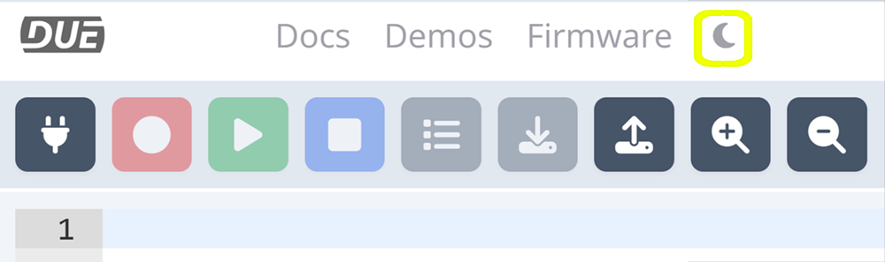

DUE Console
The DUE Console provides many functionalities. It is a great start to verify the device is functioning properly. It is also a great place to learn about and use DUE Scripts and take advantage of the versatile DUE core libraries

Immediate Window
The immediate text box sends and runs the code immediately on the DUE hardware as soon as the Enter key or arrow button is pressed.

Try DWrite('L',1) to run the LED on and then DWrite('L',0) to turn it off.
Log & History Windows
The DUE Log window is where DUE hardware will talk back to the console. Log() functions appear directly in this window. The History windows provides a history of your DUE session. The eraser button clears the windows.
Log("This is where log outputs appear")

Connect
Select the connect button to connect to the DUE hardware.

Record
Sends the script in the editor window to the DUE hardware's flash.

Play
Runs the code that is stored in flash.

Stop
Stops the program running on the DUE hardware.

List
The List button loads the program currently stored in flash into the editor window.

Download
Saves the code in the consoles editor window to a text file.

Load
Loads a saved program into the editor.
Zoom
Zooms the edit window in and out.
Docs
Links to the DUE Script Documentation.
Demos
Select from pre-built DUE Script Demos that load into the edit window.

Firmware
Select and load the appropriate firmware to your device.

Theme
Changes the consoles theme to Light or Dark.
